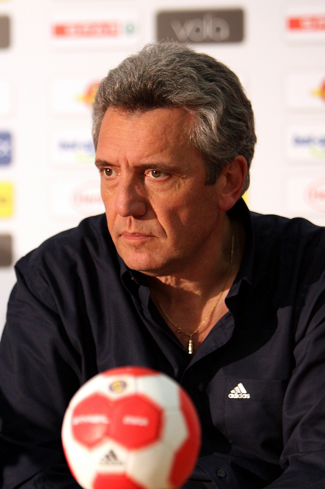

Introduction
L'équipe de France de handball masculin est constituée d'une sélection de
joueurs français sous l'égide de la fédération française de handball.
Double championne du monde en titre et vice-championne olympique, il s'agit
de la sélection la plus titrée de tous les temps.
La génération que l'on surnomme « les Experts » est même considérée comme
la plus talentueuse de l'histoire du handball international, devant l'équipe
de Suède des années 1990. Cette génération parvient à réaliser à partir du
milieu des années 2000 avec le même noyau de joueurs ce qu'aucune autre formation
nationale masculine n'avait encore accompli : elle se bâtit en quelques années
seulement un palmarès unique en remportant entre 2006 et 2017 neuf titres sur
les quatorze compétitions qu'elle dispute. Seule nation à conserver un titre
olympique dans ce sport2 (victoires en 2008 et en 2012), elle est également
la première, et à ce jour la seule, à avoir détenu simultanément les trois
trophées majeurs (Jeux olympiques, Championnat du monde, Championnat d'Europe),
et ce à deux reprises en 2010 puis en 2015.
L'équipe de France devient en 2017 la première équipe de l'histoire à gagner
six titres mondiaux (1995, 2001, 2009, 2011, 2015 et 2017) auxquels s'ajoutent
trois titres européens (2006, 2010 et 2014) et deux titres olympiques (2008 et
2012), ce qui en fait la première équipe à avoir remporté au moins deux fois
chacune des trois compétitions majeures.
Le sélectionneur : Claude Onesta

Claude Onesta, né le 6 février 1957 à Albi, est un entraîneur de
handball français, manager général de l'équipe de France masculine
depuis 2016, après en avoir été l'entraîneur, de 2001 à 2016.
Il est considéré comme le meilleur entraîneur d'équipe nationale de
l'histoire du handball. Avec son homologue russe Vladimir Maksimov,
il possède l'un des plus beaux palmarès d'entraîneur de handball avec
des titres dans les compétitions majeures, les Jeux olympiques, les
championnat du monde et championnat d'Europe.
En janvier 2010, il conduit son équipe à un deuxième titre européen,
devenant la première équipe de handball masculin à détenir de manière s
imultanée les trois titres majeurs. Il renouvelle l'exploit un an après,
en janvier 2011, lors des championnats du monde en Suède, puis le 12
août 2012, conduit la formation qui remporte un deuxième titre olympique
consécutif à Londres. Il mène de nouveau l'équipe de France au titre de
champion d'Europe en 2014 après une éclatante victoire face au Danemark,
pays hôte.
Il permet à l'équipe de France de remporter le titre de champion du
monde au Qatar en 2015, en remportant la finale face au pays hôte.
Au total, Claude Onesta a mené la France à dix finales, 9 remportées
dont la seule perdue face au Danemark aux Jeux olympiques d'été de 2016,
à Rio de Janeiro, et la dernière remportée face à la Norvège au championnat
du monde 2017 en France, en tant que Manager.
Les joueurs
Vincent Gérard
Né le 16 décembre 1986 à Woippy. Il évolue au poste de gardien de but au club du Montpellier
Handball depuis 2015 et en équipe de France depuis 2013.
Lire la suite
Thierry Omeyer
Né le 2 novembre 1976 à Mulhouse. Il évolue au poste de gardien de but en
équipe de France depuis 1999 et au sein du Paris Saint-Germain depuis 2014.
lire la suite
Luc Abalo
Né le 6 septembre 1984 à Ivry-sur-Seine. Il évolue en équipe de France depuis 2005,
et compte donc à son palmarès trois titres européens (2006, 2010, 2014),
trois titres mondiaux (2009, 2011 et 2017) et deux médailles d'or olympiques
(2008, 2012). Il évolue depuis 2012 avec le Paris Saint-Germain Handball.
lire la suite